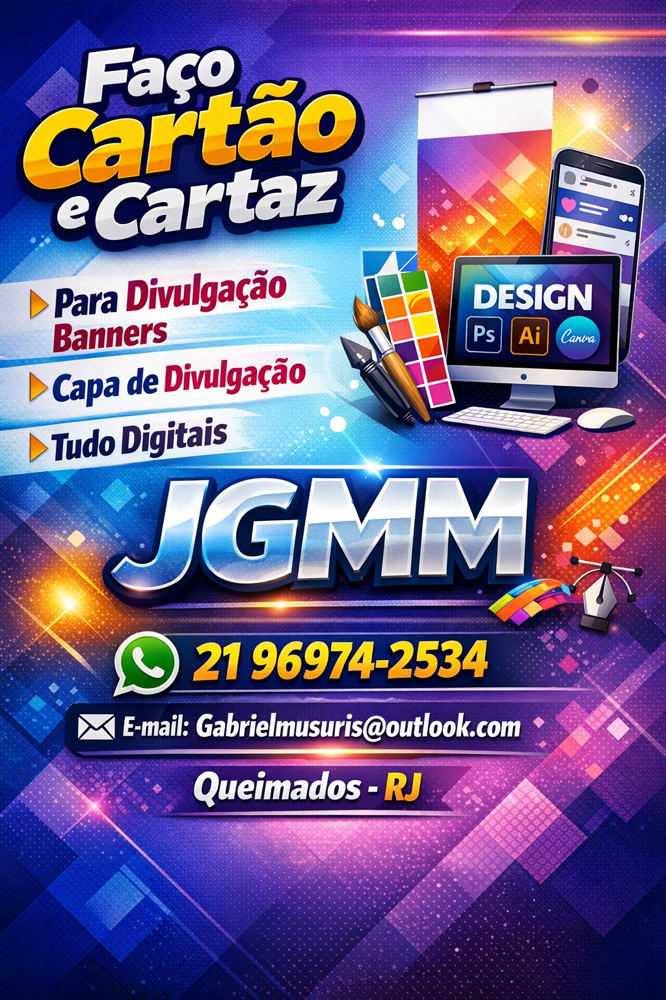
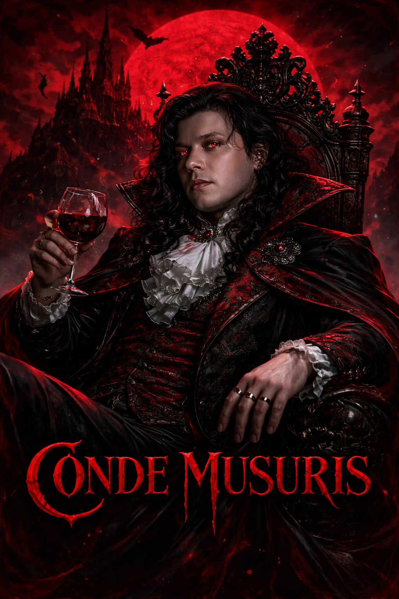
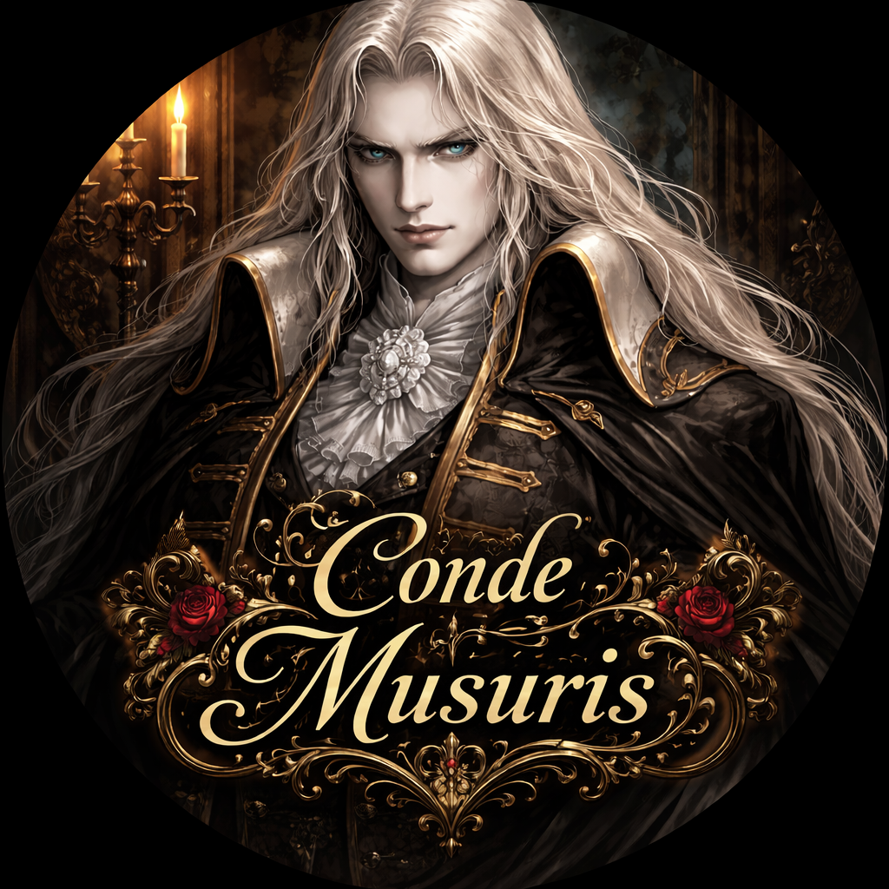
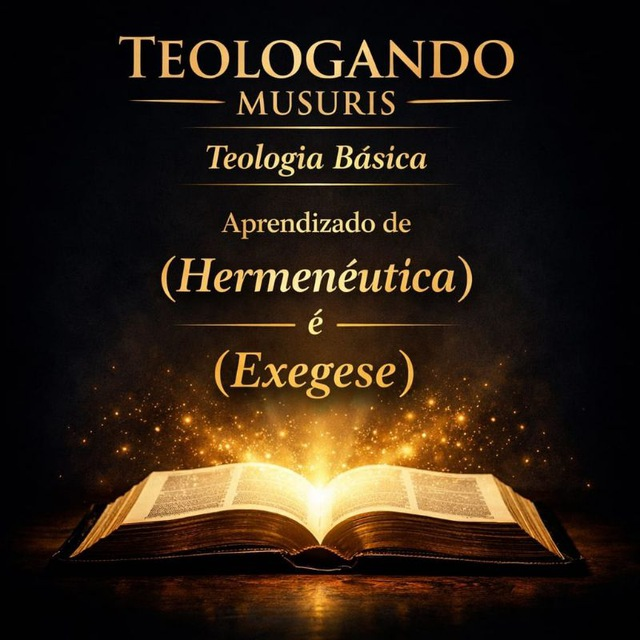

Symphony of the Night


Symphony of the Night conta a história de Alucard, filho de Drácula, que desperta para impedir o retorno do pai. O castelo muda constantemente e está cheio de segredos.


Explore o universo sombrio de Castlevania e a história de Drácula.

Symphony of the Night conta a história de Alucard, filho de Drácula, que desperta para impedir o retorno do pai. O castelo muda constantemente e está cheio de segredos.

A versão de Saturn traz áreas extras, Maria jogável e conteúdos diferentes, mas com desempenho inferior comparado ao PlayStation.
Desenvolvedor: Gabriel Musuris
Conhecido como: Conde Musuris
Trabalho com criação de sites e jogos de plataforma.